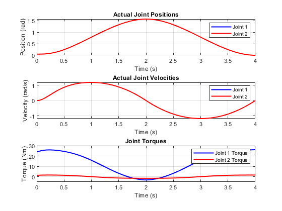

function [qd1, vd1, ad1, qd2, vd2, ad2] = generate_trajectory(t)
t_waypoints = [0 2 4];
waypoints = [0, pi/2, 0];
velocities = [0, 0, 0];
[qd, vd, ad] = cubicpolytraj(waypoints, t_waypoints, t, ...
'VelocityBoundaryCondition', velocities);
qd1 = qd; vd1 = vd; ad1 = ad;
qd2 = qd; vd2 = vd; ad2 = ad;
end
function xdot = robot_dynamics(t, x, para)
q1 = x(1); q1dot = x(2); q2 = x(3); q2dot = x(4);
[qd, vd, ad] = generate_trajectory(t);
q1d = qd;
q2d = qd;
Vd = [vd; vd];
Ad = [ad; ad];
Aq = zeros(2,1);
Aq(1)= Ad(1) + para.Kp1*(q1d - q1) + para.Kd1*(Vd(1)-q1dot);
Aq(2)= Ad(2) + para.Kp2*(q2d - q2) + para.Kd2*(Vd(2)-q2dot);
D = zeros(2, 2);
D(1,1) = para.m1 * para.lc1^2 + para.m2 * (para.l1^2 + para.lc2^2 + 2 * para.l1 * para.lc2 * cos(q2)) + para.I1 + para.I2;
D(1,2) = para.m2 * (para.lc2^2 + para.l1 * para.lc2 * cos(q2)) + para.I2;
D(2,1) = D(1,2);
D(2,2) = para.m2 * para.lc2^2 + para.I2;
C = zeros(2, 2);
C(1, 1) = -para.m2 * para.l1 * para.lc2 * sin(q2) * q2dot;
C(1, 2) = -para.m2 * para.l1 * para.lc2 * sin(q2) * (q1dot + q2dot);
C(2, 1) = para.m2 * para.l1 * para.lc2 * sin(q2) * q1dot;
C(2, 2) = 0;
N = zeros(2, 1);
N(1) = para.m1 * para.g * para.lc1 * cos(q1) + para.m2 * para.g * (para.l1 * cos(q1) + para.lc2 * cos(q1 + q2));
N(2) = para.m2 * para.g * para.lc2 * cos(q1 + q2);
Tau = 0.9*D*Aq + 0.9*C*[q1dot; q2dot] + 0.9*N;
Tau(1) = max(min(Tau(1), 50), -50);
Tau(2) = max(min(Tau(2), 50), -50);
a = [Tau(1); Tau(2)] - 0.9*C * [q1dot; q2dot] - 0.9*N;
qdoubledot = 0.9*D \ a;
xdot = [q1dot; qdoubledot(1); q2dot; qdoubledot(2)];
end
para.m1 = 7.848;
para.m2 = 4.49;
para.l1 = 0.3;
para.lc1 = 0.1554;
para.lc2 = 0.0341;
para.I1 = 0.176;
para.I2 = 0.0411;
para.g = 9.81;
para.Kp1 = 50;
para.Kp2 = 50;
para.Kd1 = 10;
para.Kd2 = 10;
tspan = [0 4];
x0 = [0.05; 0; 0.05; 0];
[t, x] = ode45(@(t, x) robot_dynamics(t, x, para), tspan, x0);
joint_accelerations = zeros(length(t), 2);
tau1 = zeros(length(t), 1);
tau2 = zeros(length(t), 1);
tracking_error_q1 = zeros(length(t), 1);
tracking_error_q2 = zeros(length(t), 1);
tracking_error_v1 = zeros(length(t), 1);
tracking_error_v2 = zeros(length(t), 1);
tracking_error_a1 = zeros(length(t), 1);
tracking_error_a2 = zeros(length(t), 1);
for i = 1:length(t)
[qd, vd, ad] = generate_trajectory(t(i));
q1d = qd;
q2d = qd;
Vd = [vd; vd];
Ad = [ad; ad];
q1 = x(i, 1);
q1dot = x(i, 2);
q2 = x(i, 3);
q2dot = x(i, 4);
Aq = zeros(2,1);
Aq(1) = Ad(1) + para.Kp1 * (q1d - q1) + para.Kd1 * (Vd(1) - q1dot);
Aq(2) = Ad(2) + para.Kp2 * (q2d - q2) + para.Kd2 * (Vd(2) - q2dot);
D_current = zeros(2, 2);
D_current(1,1) = para.m1 * para.lc1^2 + para.m2 * (para.l1^2 + para.lc2^2 + 2 * para.l1 * para.lc2 * cos(q2)) + para.I1 + para.I2;
D_current(1,2) = para.m2 * (para.lc2^2 + para.l1 * para.lc2 * cos(q2)) + para.I2;
D_current(2,1) = D_current(1,2);
D_current(2,2) = para.m2 * para.lc2^2 + para.I2;
C_current = zeros(2, 2);
C_current(1, 1) = -para.m2 * para.l1 * para.lc2 * sin(q2) * q2dot;
C_current(1, 2) = -para.m2 * para.l1 * para.lc2 * sin(q2) * (q1dot + q2dot);
C_current(2, 1) = para.m2 * para.l1 * para.lc2 * sin(q2) * q1dot;
C_current(2, 2) = 0;
N_current = zeros(2, 1);
N_current(1) = para.m1 * para.g * para.lc1 * cos(q1) + para.m2 * para.g * (para.l1 * cos(q1) + para.lc2 * cos(q1 + q2));
N_current(2) = para.m2 * para.g * para.lc2 * cos(q1 + q2);
Tau = 0.9*D_current * Aq + 0.9*C_current * [q1dot; q2dot] + 0.9*N_current;
tau1(i) = Tau(1);
tau2(i) = Tau(2);
tau1(i) = max(min(tau1(i), 50), -50);
tau2(i) = max(min(tau2(i), 50), -50);
a_current = [tau1(i); tau2(i)] - 0.9*C_current * [q1dot; q2dot] - 0.9*N_current;
joint_accelerations(i, :) = 0.9*D_current \ a_current;
tracking_error_q1(i) = q1d - q1;
tracking_error_q2(i) = q2d - q2;
tracking_error_v1(i) = Vd(1) - q1dot;
tracking_error_v2(i) = Vd(2) - q2dot;
tracking_error_a1(i) = Ad(1) - joint_accelerations(i, 1);
tracking_error_a2(i) = Ad(2) - joint_accelerations(i, 2);
end
figure;
subplot(3, 1, 1);
plot(t, x(:, 1), 'b', 'LineWidth', 1.5);
hold on;
plot(t, x(:, 3), 'r', 'LineWidth', 1.5);
plot(t, qd, 'k--', 'LineWidth', 1.5);
hold off;
xlabel('Time (s)');
ylabel('Position (rad)');
title('Actual Joint Positions');
legend('Joint 1', 'Joint 2');
grid on;
subplot(3, 1, 2);
plot(t, x(:, 2), 'b', 'LineWidth', 1.5);
hold on;
plot(t, x(:, 4), 'r', 'LineWidth', 1.5);
plot(t, vd, 'k--', 'LineWidth', 1.5);
hold off;
xlabel('Time (s)');
ylabel('Velocity (rad/s)');
title('Actual Joint Velocities');
legend('Joint 1', 'Joint 2');
grid on;
subplot(3, 1, 3);
plot(t, tau1, 'b', 'LineWidth', 1.5);
hold on;
plot(t, tau2, 'r', 'LineWidth', 1.5);
hold off;
xlabel('Time (s)');
ylabel('Torque (Nm)');
title('Joint Torques');
legend('Joint 1 Torque', 'Joint 2 Torque');
ylim([-5 30]);
grid on;
figure;
subplot(2, 1, 1);
plot(t, tracking_error_q1, 'b', 'LineWidth', 1.5);
xlabel('Time (s)');
ylabel('Error (rad)');
title('Tracking Error for Joint 1');
grid on;
subplot(2, 1, 2);
plot(t, tracking_error_q2, 'r', 'LineWidth', 1.5);
xlabel('Time (s)');
ylabel('Error (rad)');
title('Tracking Error for Joint 2');
grid on;
figure;
subplot(2, 1, 1);
plot(t, tracking_error_v1, 'b', 'LineWidth', 1.5);
xlabel('Time (sec)');
ylabel('Error (rad/sec)');
title('velocity Error for Joint 1');
grid on;
subplot(2, 1, 2);
plot(t, tracking_error_v2, 'r', 'LineWidth', 1.5);
xlabel('Time (sec)');
ylabel('Error (rad/sec)');
title('velocity Error for Joint 2');
grid on;
figure;
subplot(2, 1, 1);
plot(t, tracking_error_a1, 'b', 'LineWidth', 1.5);
xlabel('Time (sec)');
ylabel('Error (rad/sec^2)');
title('acceleration Error for Joint 1');
grid on;
subplot(2, 1, 2);
plot(t, tracking_error_a2, 'r', 'LineWidth', 1.5);
xlabel('Time (sec)');
ylabel('Error (rad/sec^2)');
title('acceleration Error for Joint 2');
grid on;
figure;
subplot(2, 1, 1);
plot(t, joint_accelerations(:, 1), 'b', 'LineWidth', 1.5);
xlabel('Time (s)');
ylabel('Acceleration (rad/s^2)');
title('Joint 1 Acceleration');
grid on;
subplot(2, 1, 2);
plot(t, joint_accelerations(:, 2), 'r', 'LineWidth', 1.5);
xlabel('Time (s)');
ylabel('Acceleration (rad/s^2)');
title('Joint 2 Acceleration');
grid on;
tspan = linspace(0, 4, 100);
qd1 = zeros(size(tspan));
vd1 = zeros(size(tspan));
ad1 = zeros(size(tspan));
qd2 = zeros(size(tspan));
vd2 = zeros(size(tspan));
ad2 = zeros(size(tspan));
for i = 1:length(tspan)
[qd1(i), vd1(i), ad1(i), qd2(i), vd2(i), ad2(i)] = generate_trajectory(tspan(i));
end
figure;
subplot(3, 1, 1);
plot(tspan, qd1, 'LineWidth', 2);
hold on;
plot(tspan, qd2, 'LineWidth', 2);
title('Desired Position (q) for Both Joints');
xlabel('Time (s)');
ylabel('Position (rad)');
legend('Joint 1', 'Joint 2');
grid on;
subplot(3, 1, 2);
plot(tspan, vd1, 'LineWidth', 2);
hold on;
plot(tspan, vd2, 'LineWidth', 2);
title('Desired Velocity (v) for Both Joints');
xlabel('Time (s)');
ylabel('Velocity (rad/s)');
legend('Joint 1', 'Joint 2');
grid on;
subplot(3, 1, 3);
plot(tspan, ad1, 'LineWidth', 2);
hold on;
plot(tspan, ad2, 'LineWidth', 2);
title('Desired Acceleration (a) for Both Joints');
xlabel('Time (s)');
ylabel('Acceleration (rad/s^2)');
legend('Joint 1', 'Joint 2');
grid on;
disp("Initial Offset Impact (problem 6):")
disp("The small initial non-zero positions in problem 6 cause higher initial tracking errors and require larger joint torques to correct the positions.")
disp("This results in more pronounced oscillations and larger velocity/acceleration errors at the beginning.")
disp("Zero Start (problem 5(a)):")
disp("Starting from zero allows the system to track the desired trajectory with fewer oscillations, lower initial errors, and smoother torque profiles,")
disp("leading to better performance in the initial stages.")
disp("Overall System Stability:")
disp("While the overall system stabilizes in both cases, the initial conditions influence the magnitude of the error and the controller's required effort.")
disp("The zero-start case shows slightly better performance overall.")
Initial Offset Impact (problem 6):
The small initial non-zero positions in problem 6 cause higher initial tracking errors and require larger joint torques to correct the positions.
This results in more pronounced oscillations and larger velocity/acceleration errors at the beginning.
Zero Start (problem 5(a)):
Starting from zero allows the system to track the desired trajectory with fewer oscillations, lower initial errors, and smoother torque profiles,
leading to better performance in the initial stages.
Overall System Stability:
While the overall system stabilizes in both cases, the initial conditions influence the magnitude of the error and the controller's required effort.
The zero-start case shows slightly better performance overall.
